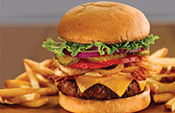
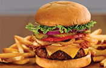
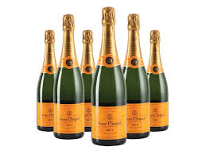
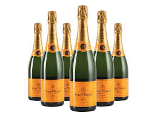
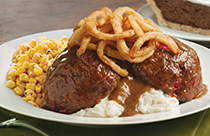
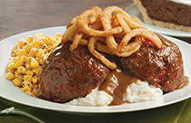

About Choma Restaurant
Who is Choma Restaurant?
Choma Restauran is an upmarket eatery in Nairobi that is specialized in offering quick foods both on site, takeaways and outside catering. The Choma restaurant is owned by the Choma group of companies. The restaurant was was crowned the restaurant of the year in 2015 for its excellent food services.
Choma Restauran offers you a unique opportunity to explore the splendor of our menu and try everything for the price of 2,990 dinars. It’s on you to order the Choma Experience, and on us to make you on a wild ride through the authentic tastes on Choma 's menu.
Our executive chefs Brian Johns and John adams have designed an original culinary experience that will change everything you know about Balkan cuisine. Small plates transform your lunch or dinner into a feast with barbecue grill, the finest selection of cheese, different blends of kaymak, hazelnuts and strawberries, local wines and rakias that meet the highest of expectations. Everything you taste here is a celebration of life; be sure to enjoy it to its fullest.
Our Mission
To be a preffered restaurant in Kenya.
Our Vision
Become Kenya's number one eatery.
Sidebar Menu
Image Galley
 

 

 
